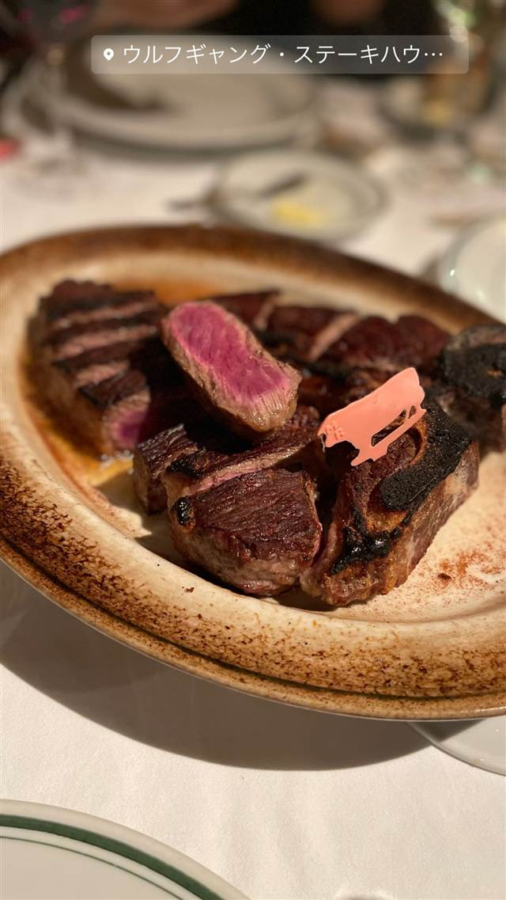

ウルフギャング・ステーキハウス 丸の内店
NYの名門で40年支配人を務めた男が開いた、28日熟成ステーキ
ウルフギャング・ステーキハウ…
NYの老舗ステーキハウスで長年支配人を務めたウルフギャング・ズウィナー氏が2004年に独立して立ち上げたステーキハウス。プライムグレードの牛肉を28日間ドライエイジングした極上ステーキが看板で、丸の内店は日本国内2号店にあたる。
TRIVIA
豆知識
- 創業者はNYの名門ステーキハウスで40年以上働いた後に独立した
- 丸の内店はニューヨーク・ワイキキ・マイアミ・ビバリーヒルズに続く海外展開の国内2号店
REVIEWS
世間の評判
3.67食べログ
熟成肉ステーキと記念日利用
- 熟成肉の旨味とジューシーな焼き加減を評価する声が多い
- 落ち着いた雰囲気で記念日利用に適していると評価する人が多い
- コストパフォーマンスが物足りないという指摘がある
- 人気店で予約が取りにくいという声も多い
食べログ 口コミ2784件
| 創業 | 2004年NYで創業、丸の内店は国内2号店 |
|---|---|
| 系譜 | NYの名門ステーキハウスで40年以上支配人を務めたウルフギャング・ズウィナー氏が独立して創業 |
| 看板 | USDAプライムグレード牛肉のポーターハウスステーキ |
| こだわり | 米国農務省格付けで最上級とされる『プライムグレード』の牛肉のみを仕入れ、専用熟成庫で28日間ドライエイジングして提供 |
| どこから | 都心 |
| 行くなら | 予約必須 |
| 営業時間 | 月〜日 11:30-23:30 |
| 予算 | 夜 ¥10,000～¥14,999 |
| 予約 | 予約可 |
| 場所 | 二重橋前駅 東京都千代田区丸の内（二重橋前駅近く） |
| メモ | 丸の内MYPLAZA明治安田生命館地下1階に位置 |
食べたもの：ステーキ
NEARBY
近い店・同じ系統の店
-
 ★
二郎系(インスパイア) 東京駅
ラーメン 雷 東京本丸店
名店「とみ田」が手がける、改札内で食べられる二郎系ラーメン
昼 ¥1,000～¥1,999 夜 ¥1,000～¥1,999
★
二郎系(インスパイア) 東京駅
ラーメン 雷 東京本丸店
名店「とみ田」が手がける、改札内で食べられる二郎系ラーメン
昼 ¥1,000～¥1,999 夜 ¥1,000～¥1,999
-
 ピザ 東京駅・有楽町駅・二重橋前駅
A16 TOKYO
サンフランシスコ発、南イタリア仕込みの薪窯焼きピッツァ「ポモドリーニ」
夜 ¥4,000～¥4,999
ピザ 東京駅・有楽町駅・二重橋前駅
A16 TOKYO
サンフランシスコ発、南イタリア仕込みの薪窯焼きピッツァ「ポモドリーニ」
夜 ¥4,000～¥4,999
-
 コーヒー 東京駅
mammoth coffee 東京駅ヤエチカ店
韓国で700店超展開、Lサイズ約940mlの大容量コーヒー
昼 ～¥999 夜 ～¥999
コーヒー 東京駅
mammoth coffee 東京駅ヤエチカ店
韓国で700店超展開、Lサイズ約940mlの大容量コーヒー
昼 ～¥999 夜 ～¥999
-
 カフェ 東京駅
GODIVA café Tokyo
チョコレート専門ブランド発、椅子は北欧フリッツ・ハンセン製
昼 ¥1,000～¥1,999 夜 ¥1,000～¥1,999
カフェ 東京駅
GODIVA café Tokyo
チョコレート専門ブランド発、椅子は北欧フリッツ・ハンセン製
昼 ¥1,000～¥1,999 夜 ¥1,000～¥1,999
-
 ケーキ・パフェ 東京
BAKE CHEESE TART グランスタ丸の内店
北海道の工場から直送の原材料を目の前で焼き上げるチーズタルト
昼 ～¥999 夜 ～¥999
ケーキ・パフェ 東京
BAKE CHEESE TART グランスタ丸の内店
北海道の工場から直送の原材料を目の前で焼き上げるチーズタルト
昼 ～¥999 夜 ～¥999
-
 うどん・ほうとう 東京駅
難波千日前 釜たけうどん 八重洲北口店
脱サラ店主が独学で生んだ、半熟卵天ぷらのちく玉天ぶっかけうどん
昼 ～¥999 夜 ～¥999
うどん・ほうとう 東京駅
難波千日前 釜たけうどん 八重洲北口店
脱サラ店主が独学で生んだ、半熟卵天ぷらのちく玉天ぶっかけうどん
昼 ～¥999 夜 ～¥999